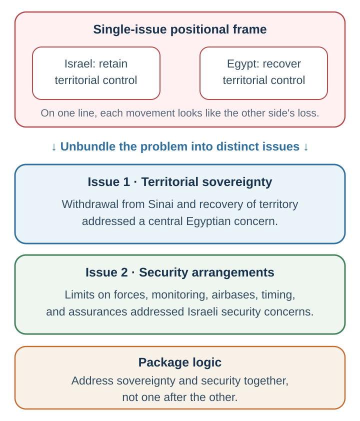
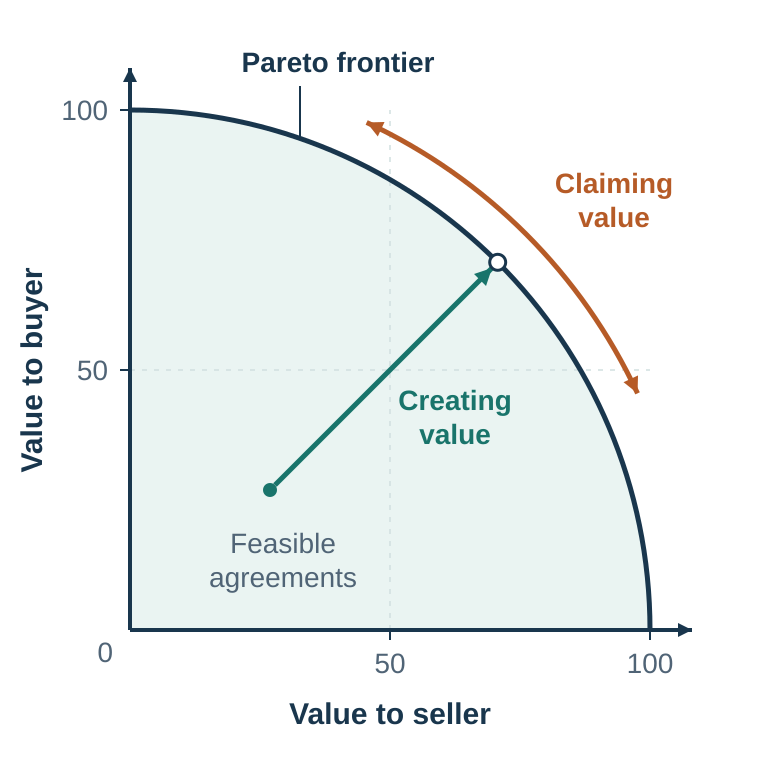

37 Creating Value Across Differences
Creating value before dividing it
Learning goals
- Diagnose the interests and constraints hidden beneath a stated position.
- Build a priority map that identifies differences capable of creating joint value.
- Produce and evaluate a package trade that improves both parties without surrendering distributive discipline.
Why would a supplier refuse a million-pound order?
A large buyer and a small European supplier have reportedly agreed on $18 per pound for one million pounds of an ingredient each year. The buyer will invest in a new product only if competitors cannot obtain the ingredient, yet the supplier refuses exclusivity—even after the buyer offers minimum orders and more money. What should the buyer do next?
Write one sentence you would say at the table. The most useful sentence is not another concession. It is a question: “Help me understand what selling outside this agreement protects for you.” In the teaching case, the supplier’s objection concerned an existing promise to sell only 250 pounds a year to a cousin. A narrowly tailored exception could protect that relationship while giving the buyer commercial exclusivity. The reported numbers make the contrast memorable; the transferable logic is to diagnose the interest before paying to move the position (Thompson et al., 2010).
This chapter follows that teaching sequence: begin with an apparently irrational position, diagnose fixed-pie assumptions, map interests and priorities, construct trades, then test whether the package really improves both sides.
Distributive and integrative negotiation are often taught separately, but real negotiations usually contain both.
A salary negotiation may create value by adding flexibility, professional development, start date, title, bonus, and review schedule. But the parties may still divide value over salary. A supplier contract may create value through quality guarantees, delivery flexibility, risk sharing, and future volume commitments. But the parties may still bargain over price. A peace agreement may create value through security guarantees, demilitarized zones, recognition, and monitoring. But the parties may still disagree over territory, compensation, or authority.
Value creation and value claiming are not mutually exclusive. They are two tasks inside the same negotiation.
A bounded historical illustration makes this distinction concrete. In the Egypt–Israel strand of the Camp David process, an official U.S. account describes Egypt pressing for Israeli withdrawal from the Sinai in exchange for security arrangements; the negotiations also addressed settlements, airbases, timing, implementation, and Palestinian questions. Separating territorial sovereignty from security arrangements made a multi-issue package conceivable. That teaching abstraction does not explain why agreement occurred, capture the full history, or represent every affected party and interest (U.S. Department of State, Office of the Historian, n.d.).

This creates a central tension. To create value, negotiators must often share information about their interests, priorities, constraints, and preferences. But sharing information can make them vulnerable when value is later claimed. If I tell you that delivery speed matters more to me than price, you may use that information to demand a higher price. If you tell me that you have no strong alternative, I may push harder. If I reveal that one issue is easy for me to concede, you may ask for it without giving anything back.
Lax and Sebenius (1986) call this the negotiator’s dilemma: the tension between cooperative moves that create value and competitive moves that claim value. Too little openness prevents value creation. Too much openness can lead to exploitation.
Good negotiators manage this tension. They do not reveal everything. They do not hide everything. They reveal enough to make value creation possible while protecting essential information such as their reservation value. They ask questions. They share interests rather than bottom lines. They make conditional offers. They propose multiple options. They use objective standards. They build trust gradually. They keep both value creation and value claiming in view.
A useful principle is:
Create value before claiming it, but prepare to claim value before you start creating it.
This means that integrative negotiation still requires the preparation developed in Preparing and Claiming Value: BATNA, reservation value, target, standards, and alternatives. Without distributive discipline, a cooperative negotiator can create value and then fail to capture a fair share of it.
Pareto efficiency

The goal of integrative negotiation is not simply to reach agreement. The goal is to reach an agreement that uses the available value well.
An agreement is Pareto efficient relative to a specified feasible set if there is no feasible alternative that at least one specified party prefers while no specified party is worse off. The parties may still argue about distribution, rights, or implementation, but no Pareto improvement remains within the parties, issues, constraints, and value measures included in that comparison.
A Pareto frontier is the set of Pareto-efficient agreements under those specifications. It need not be a smooth or convex curve; the feasible set may be discrete, nonconvex, or only partly known. The two axes in Figure 37.2 represent each party’s own value measure. Their units need not be interpersonally comparable, so the graph does not license adding one party’s score to the other’s or declaring which division maximizes “total happiness.”
Consider a negotiation between a software provider and a client. The parties negotiate price, start date, service level, customization, training, and contract length. Suppose they reach an agreement with a moderate price, late start date, no training, and short contract. Later they realize that the provider had unused training capacity, the client urgently needed training, and a longer contract would have reduced the provider’s risk enough to lower the price. The initial agreement was not Pareto efficient. Both could have been better off.
Pareto efficiency does not mean fairness. One efficient package can favor one party relative to another efficient package. Efficiency asks whether a specified feasible mutual improvement remains; fairness asks whether the rights, process, risks, and division are defensible. A complete negotiation must consider both, and must also ask whether important parties or issues were excluded from the map.
This distinction matters because negotiators often settle for agreements that are both inefficient and unfair. They compromise on visible positions while missing hidden trades. They split one issue while ignoring others. They accept a deal that is better than impasse but worse than what both could have achieved.
True integrative negotiation asks:
Are there issues we have not discussed? Are there differences in priorities we can trade on? Are there risks one side can bear more cheaply? Are there timing differences that matter? Are there future events we can make the agreement contingent on? Are there capabilities each side can contribute? Are there ways to improve implementation? Can one party get something valuable that costs the other party little?
The best negotiators do not only ask, “Is this acceptable?” They ask, “Is this the best agreement we can jointly design?”
Compromise is not integration
Compromise is often treated as the ideal negotiation outcome. Each side gives something up. The result feels balanced. But compromise is not always integrative. Sometimes compromise produces a worse outcome for both parties than a more creative agreement would have.
Compromise is especially tempting when conflict is uncomfortable. Splitting the difference creates closure. It feels fair. It avoids asking difficult questions. But it may leave value on the table.
In the supplier case, offering more money for complete exclusivity is positional compromise: the buyer moves on price and expects the supplier to move on exclusivity. It still treats “exclusive or not” as one line. Interest discovery changes the option. The buyer needs commercial protection for a major investment; the supplier needs to honor a small family commitment. A carve-out for the existing 250-pound sale can protect both. No one split exclusivity in half. The parties changed its scope.
The key lesson is:
Compromise divides positions. Integration satisfies interests.
Compromise is not always bad. Sometimes it is the best available option. But it should not be the first imagination. Before compromising, ask whether the parties are solving the wrong problem.
Barriers to value creation
If integrative negotiation is so valuable, why do negotiators so often fail to create value?
Fixed-pie beliefs and inaccurate social perception prevent negotiators from discovering compatible interests and differences in priorities (Thompson & Hastie, 1990).
The first barrier is fixed-pie perception. Negotiators assume that the other side’s interests are directly opposed to their own. Thompson and Hastie (1990) showed that negotiators often falsely assume a fixed pie even when integrative potential exists. If I assume everything you gain is my loss, I will hide information, resist questions, and interpret your proposals defensively. The fixed-pie perception becomes self-fulfilling.
The second barrier is illusory conflict. Parties may believe their interests conflict when they are actually compatible. For example, two departments may both oppose a shared plan because each assumes the other wants control. Discussion may reveal that one wants visibility and the other wants operational autonomy. These interests can be combined.
The third barrier is positional bargaining. When parties bargain over demands rather than interests, they narrow the negotiation. “I need €80,000.” “We can only offer €70,000.” “I need March.” “We can only do July.” Positions invite concession or resistance. Interests invite problem-solving.
The fourth barrier is mistrust. If parties fear exploitation, they will not share useful information. This is rational in some environments. Trust must be built through process, reciprocity, confidentiality, objective standards, and credible behavior.
The fifth barrier is poor listening. Negotiators often try to influence before trying to learn. They defend their position, repeat arguments, and prepare counterarguments instead of asking what matters to the other side.
The sixth barrier is overconfidence. Negotiators may be too confident in their predictions, legal case, market valuation, project timeline, or future demand. Overconfidence prevents contingent agreements because each side wants the other to accept its forecast.
The seventh barrier is self-serving bias. Each side interprets fairness in a way that favors itself. A seller thinks its price is fair because of effort and quality. A buyer thinks a lower price is fair because of market alternatives and defects. Both see themselves as reasonable and the other as biased.
The eighth barrier is reactive devaluation. A proposal may seem less attractive simply because it comes from the other side (Ross, 1995). If they suggested it, perhaps it must benefit them. This can block good deals.
The ninth barrier is single-issue framing. When negotiators discuss issues one by one, they often turn each issue into a distributive battle. Multi-issue package negotiation makes trade-offs easier.
The tenth barrier is fear of appearing weak. Some negotiators believe that asking about interests or offering options signals softness. In fact, curiosity is not weakness. It is information gathering.
A useful diagnostic question is:
Are we failing because no agreement can create value, or because our process prevents us from seeing it?
Often the second answer is closer to the truth.
Interests behind positions
The basic move in integrative negotiation is to separate positions from interests.
Perspective-taking can improve discovery of integrative agreements, particularly when it supports diagnostic questioning rather than untested projection (Galinsky et al., 2008).
A position is what a party says it wants. An interest is why the party wants it.
Positions are visible. Interests are hidden.
“I want full ownership.” Why? Control, identity, security, future flexibility, investor expectations, legal simplicity?
“I need a higher salary.” Why? Living costs, status, fairness, debt, family obligations, future salary trajectory, recognition?
“We cannot accept delay.” Why? Customer commitments, regulatory deadline, cash-flow pressure, reputation, coordination with other projects?
“We require exclusivity.” Why? Investment protection, brand consistency, fear of competition, quality control?
The same position can serve different interests. The same interest can be served by different positions. This is why interest discovery creates value.
To uncover interests, ask:
What makes this important? What problem would this solve? What happens if this issue is not addressed? Who else is affected? What concern are you trying to protect? What would a good outcome allow you to do? If this exact term is difficult, what alternative could meet the same need?
Interests are not only material. They can include money, time, risk, predictability, autonomy, status, identity, face, fairness, trust, reputation, learning, security, dignity, and future opportunity.
Many negotiators ask too few “why” questions because they fear appearing intrusive. But respectful questions often improve negotiation. They signal that you are not simply rejecting the other side’s position; you are trying to understand the problem behind it.
A good phrase is:
“Help me understand what that term is meant to protect.”
This question respects the other side’s concern while opening space for alternatives.
In high-stakes negotiation, even identifying the relevant audience can change the problem. A retrospective account of the 2006 kidnapping of journalist Jill Carroll describes negotiators hypothesizing that the captors’ public messages addressed a broader regional audience, not only Western officials. Carroll’s father was therefore coached to frame her as someone reporting on the circumstances of Iraqi people; she was later released. The sequence does not establish that the message caused the release, and retrospective interpretations are uncertain. Its safe teaching point is narrower: ask whose beliefs, face, or legitimacy a position is designed to influence, and treat the answer as a hypothesis to test rather than a motive you somehow know (Cole, 2009).
Preparing across issues
Integrative negotiation requires preparation. Improvisation is not enough.
A useful preparation process has six steps.
First, identify the issues. Do not reduce the negotiation to one visible issue too early. In a job negotiation, issues may include salary, title, start date, location, remote work, travel, budget, teaching load, research support, bonus, review timing, and professional development. In a supplier negotiation, issues may include price, volume, quality, delivery, payment timing, warranty, service level, exclusivity, penalties, data sharing, and future contract length.
Second, identify your position and underlying interest for each issue. What do you want, and why? Rank your priorities. Which issues matter most? Which are flexible? Which are symbolic? Which are essential?
Third, assess the other party’s likely positions, interests, and priorities. What do they ask for? What might that protect? Which issues are probably more important to them than to you? Which are probably less important?
Fourth, identify your BATNA, target, and reservation value. Integrative negotiation does not eliminate the need for distributive preparation. You still need to know when to walk away.
Fifth, estimate the other party’s BATNA and reservation value. What happens to them if no agreement occurs? What constraints do they face? How strong are their alternatives?
Sixth, update during the negotiation. Preparation creates hypotheses, not certainties. As you ask questions and observe reactions, revise your assessment.
A preparation table can be useful:
Such a table makes differences visible. Differences are not a problem. They are opportunities for trade.
The most important question in multi-issue preparation is:
What do I value less than they do, and what do I value more than they do?
That question is the beginning of logrolling.
| Issue | My priority | Their likely priority | Potential trade |
|---|---|---|---|
| Price / salary | High | High | Use standards; do not expect easy integration. |
| Timing | High | Low or different | Trade speed, start date, or staging for value elsewhere. |
| Risk allocation | Medium | Different tolerance or forecast | Use warranties, insurance, or contingent terms. |
| Recognition / title | Low cost to one side | High symbolic value to the other | Trade status or visibility for a material term. |
| Future relationship | Different time horizons | Different | Use volume, renewal, review, or option clauses. |
Discover priorities rather than guessing them
The phrase “Which issues matter most?” is a start, not a complete diagnosis. Use several low-risk tests:
- Quick rank: Ask each side to order the issues from most to least important.
- Label and confirm: Offer a tentative inference—“It sounds as if delivery reliability matters more than customization; have I understood that correctly?”
- Allocate 100 points: Spread 100 points across issues to force explicit trade-offs. Do this separately before sharing, then compare patterns rather than exact scores.
- Ask thresholds: “What is a must-have, what is a preference, and what is flexible?” A threshold is different from a ranking.
- Run a small reaction test: Offer two safe packages that differ on one trade and observe which direction is preferred.
Each tool can mislead. People may answer strategically, priorities may change as packages become concrete, and a “deal-breaker” may hide an unexamined interest. Mirror the answer back, ask what evidence supports it, and update throughout the conversation.
Logrolling
Logrolling means trading across issues based on differences in priorities. Each side gives way on issues it values less in exchange for gains on issues it values more.
Suppose a supplier cares most about contract length because it wants predictable revenue. The buyer cares most about delivery flexibility because demand is uncertain. A value-creating agreement might give the supplier a longer contract while giving the buyer flexible delivery quantities.
Suppose a job candidate values remote work highly and salary moderately. The employer values salary cost highly but is flexible on remote work. The candidate may accept a lower salary increase in exchange for remote work.
Suppose a publisher is cautious about paying a large advance, while an author is confident in future sales and values upside. The publisher can pay a lower advance but higher royalties. The author gets upside; the publisher reduces risk.
Logrolling works only when negotiators know priorities. This is why asking about interests matters. If parties hide all priorities, they cannot trade efficiently.
A useful question is:
“Which issues are most important to you, and where do you have more flexibility?”
Some negotiators fear answering because they believe every revealed priority will be exploited. One way to reduce vulnerability is reciprocal disclosure:
“I can share which issues are most important to us if you are willing to do the same. That may help us find trades rather than bargain issue by issue.”
Another way is to use packages:
“If we can be flexible on contract length, could you be flexible on delivery quantities?”
This reveals a trade without fully revealing reservation values.
The mistake is to negotiate each issue separately. If parties settle price first, then delivery, then warranty, then payment timing, they may turn every issue into a small distributive fight. Package negotiation allows trade-offs:
“I can accept your preferred delivery schedule if we can agree on longer payment terms and a higher service level.”
Logrolling is the heart of integrative negotiation. It transforms difference into value.
An information strategy for creating and claiming value
Not every piece of information does the same work. Some information mostly affects value claiming; other information is needed to create value. The consolidated matrix below makes the trade-off explicit (Fisher et al., 2011; Thompson et al., 2010).
| Information | Effect on claiming value | Effect on creating value | Sensible default |
|---|---|---|---|
| BATNA and reservation value | Exact disclosure often weakens leverage; credible constraint disclosure can prevent impasse. | Usually not needed to discover trades. | Protect exact limits; disclose only for a clear process or agreement benefit. |
| Position or opening demand | Opacity and an ambitious opening can help claim value. | A position alone reveals little about how to enlarge the pie. | State it with a legitimate reason, then move to interests. |
| Interests | Disclosure can expose where pressure would hurt. | Essential for inventing alternative ways to solve the problem. | Share progressively and reward reciprocity. |
| Priorities | May reveal which concessions are cheap or costly. | Essential for logrolling and claiming a share of the enlarged surplus. | Reveal relative priorities through questions, packages, and conditional trades. |
| Key facts | Information asymmetry can create bargaining power, but concealment may be unlawful or unethical. | Accurate material facts improve agreement quality and implementation. | Verify and disclose facts required for informed consent or performance. |
| Substantiation | Reasons and evidence strengthen a claim. | Shared standards can reduce conflict and support joint search. | Use real evidence; avoid ploys that damage trust. |
The matrix is not a license for concealment. Material facts, legal duties, safety, fraud, and informed consent set boundaries that strategic advice cannot override.
Differences are opportunities
In everyday life, people often treat differences as obstacles. In negotiation, differences often create value.
Differences in valuation create trade. If you value an item more than I do, I can give it to you in exchange for something I value more.
Differences in cost create efficiency. If I can provide a service cheaply that is valuable to you, including it in the agreement creates value.
Differences in capabilities create cooperation. One firm has technology; another has distribution. One partner has local knowledge; another has capital. One colleague is good at analysis; another is good at presentation.
Differences in risk attitudes create insurance-like trades. A party better able to bear risk may accept uncertain payoff in exchange for compensation. A risk-averse party may prefer certainty.
Differences in time preferences create borrowing, lending, staged payments, early delivery discounts, or delayed compensation. One side may value cash now; another may value higher total payment later.
Differences in beliefs create contingent contracts. If one side is optimistic and the other skeptical, rather than arguing endlessly about who is right, they can make payments depend on future outcomes.
Differences in tax position, regulation, reputation, capacity, inventory, seasonality, or stakeholder constraints can also create value.
The key is not to convince the other side to think like you. If you like apples and they like oranges, do not spend the negotiation persuading them that apples are better. Trade.
This principle is easy to state but difficult to practice because disagreement often triggers persuasion. When someone values an issue differently, we may want to prove that our valuation is correct. In integrative negotiation, the better response is curiosity:
“If you value that issue more than I do, how can we structure a trade?”
Difference is not only a source of conflict. It is the raw material of agreement.
Build the supplier package
The buyer and supplier can now replace a sequence of isolated demands with a package:
| Issue | Buyer values | Supplier values | Package move |
|---|---|---|---|
| Exclusivity | Protection of the product investment | Honoring the existing family commitment | Commercial exclusivity with a named 250-pound legacy exception. |
| Volume | Reliable capacity | Predictable revenue | Annual minimum volume with quarterly call-off forecasts. |
| Timing | Delivery before production milestones | Protection from uncontrollable schedule risk | Staged delivery and jointly defined dependency dates. |
| Price and investment | Competitive unit economics | Recovery of dedicated-capacity cost | Volume tiers plus a contribution to verifiable capacity investment. |
| Quality | Reliable inputs | Clear acceptance criteria | Shared specifications, inspection, cure periods, and review. |
The table does not finish the negotiation. It creates packages worth testing. The parties still need to divide the enlarged value, verify authority and capacity, compare the package with their BATNAs, and decide how promises will be measured and enforced. Those design problems are the subject of the next chapter.
Practice Lab
Using the supplier case, each side privately allocates 100 points across exclusivity, volume, timing, price, investment, quality, and relationship. Then exchange only rankings or package preferences—not reservation values. Produce three packages that vary meaningfully across issues, identify the trade embodied in each, and calculate whether each package beats both BATNAs. Submit one revised package after the counterpart corrects an interest you had misdiagnosed.
Take it forward
- Use this when: parties disagree on positions but may value issues, timing, risk, forecasts, or capabilities differently.
- Do not infer: compromise is integration, or a larger joint surplus is automatically fair or implementable.
- Try this next: ask what one rigid term is meant to protect, then design two packages that protect that interest in different ways.
References cited in this chapter
Cole, R. (2009, April 10). FBI brings experience and skill to Somali hostage negotiations. Los Angeles Times. https://www.latimes.com/archives/la-xpm-2009-apr-10-fg-pirates-fbi10-story.html
Fisher, R., Ury, W., & Patton, B. (2011). Getting to yes: Negotiating agreement without giving in (3rd ed.). Penguin.
Galinsky, A. D., Maddux, W. W., Gilin, D., & White, J. B. (2008). Why it pays to get inside the head of your opponent: The differential effects of perspective taking and empathy in negotiations. Psychological Science, 19(4), 378–384. https://doi.org/10.1111/j.1467-9280.2008.02096.x
Lax, D. A., & Sebenius, J. K. (1986). The manager as negotiator: Bargaining for cooperation and competitive gain. Free Press.
Ross, L. (1995). Reactive devaluation in negotiation and conflict resolution. In K. Arrow, R. H. Mnookin, L. Ross, A. Tversky, & R. Wilson (Eds.), Barriers to conflict resolution (pp. 26–42). W. W. Norton.
Thompson, L. L., & Hastie, R. (1990). Social perception in negotiation. Organizational Behavior and Human Decision Processes, 47(1), 98–123.
Thompson, L. L., Wang, J., & Gunia, B. C. (2010). Negotiation. Annual Review of Psychology, 61, 491–515.
U.S. Department of State, Office of the Historian. (n.d.). The Camp David Accords and the Arab-Israeli peace process. https://history.state.gov/milestones/1977-1980/camp-david